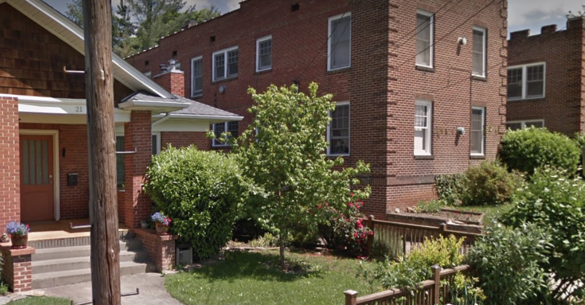
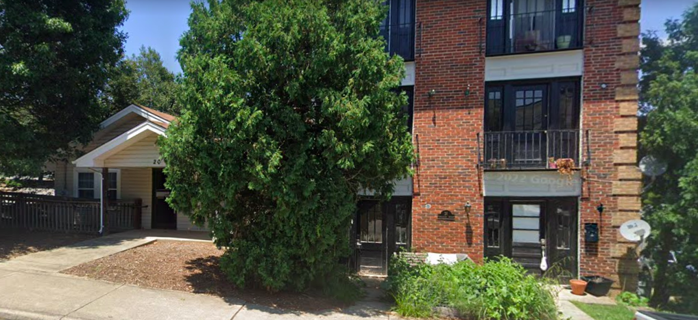

More Missing Middle for Asheville
The “Missing Middle”
Asheville’s “Missing Middle Study” was released on November 17, 2023. Read the PDF here.
What Is the “Missing Middle”?
In cities across North America, we tend to have small downtowns with very large buildings, surrounded by very large areas with very small buildings.
That is, we often only have two extremes: high-rises, and detached single-family homes.
But it turns out that some of the most desirable neighborhoods in the country, ones that tend to have been built before the mid-20th century, look like something in between.

The kinds of housing in these neighborhoods are the “missing middle.” As you can see on the image above, they are in the “middle” of a spectrum of various densities and heights.
And they’re “missing” because after World War II, places like Asheville gave their land use almost exclusively over to sprawled out, single-family homes.
How Did “Middle” Housing Go “Missing” Exactly?
The reason why homes such as duplexes, quadplexes, triple-deckers, townhouses, and small apartment buildings went “missing” is a big story. But at least some of the reason can be boiled down to the phrase: “exclusionary zoning.”
In the early twentieth century, residents of some neighborhoods determined that they could make their communities more exclusive by restricting local land use. Banning multi-family homes, imposing mandatory setbacks and minimum lot sizes, and setting other restrictions meant that it would be harder for poor people to find homes in such neighborhoods.
This was segregation by another name. In many municipalities across the country, these new zoning restrictions were literally promoted by segregationists.
And after the Civil Rights Movement made formal residential segregation illegal, exclusionary zoning went into overdrive. Many city neighborhoods—including some in Asheville—were downzoned.
To some, this didn’t seem like a big deal at the time. The federal government was subsidizing our petroleum-dependent economy and our car-dependent lifestyles. The creation of sprawling new subdivisions seemed like the answer to the problems that exclusionary zoning posed.
What Are the Drawbacks When “Middle” Housing is “Missing”?
It’s clear now that the long-term effects of exclusionary zoning are two-fold.
First, as the nation’s population inevitably grows, the capacity of a city to hold people doesn’t grow with it. Exclusionary zoning freezes places in time, even though cities by their nature need to change. (And of course when places are downzoned, their potential population capacity is reduced.)
This is especially bad in places that are desirable. It’s natural for us to want to live near jobs, amenities, sites of culture, commerce, and connection. When we cordon such places off from density, we get a mismatch between housing supply and housing demand in such places. And as a consequence, land values go through the roof.
Remember, this was all part of the plan. If land values are high, and lots can’t be shrunk, sub-divided, or put to use by multiple families at once, you can keep poor and less affluent people out of your neighborhood.
Second, exclusionary zoning deepens car dependency, necessitating more and more greenhouse gas emissions as working people and their families are pushed further and further away from job centers. When we can’t build homes for our growing population near downtown or other locations close to jobs and amenities, we’re forced to do it in parts of the region that we’d rather protect and preserve. The result is not just sprawl, but choked highways and long commutes too.
What Do You Mean by MORE Missing Middle?
The title of this page says “more” missing middle, because although a missing-middle inspired reform of our zoning code could potentially have fantastic effects, we also want to stress that neighborhoods all over Asheville have long featured “middle” housing types.

Opponents of upzoning and land use reforms, especially those that live in neighborhoods with only single-family homes, will often suggest that these kinds of homes are incompatible with multi-family homes.
It’s hard to imagine even a four-unit apartment or condominium building amidst a sea of single-family homes, when that sea of single-family homes surrounds you.
But there’s nothing radical about single-family homes living next to apartments. Or townhomes. Old Asheville neighborhoods are full of such configurations.

* * *
Click “Next” to learn more about “Missing Middle” housing in Asheville and across the country.